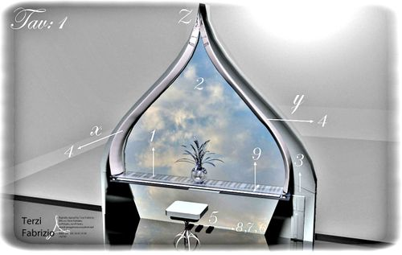
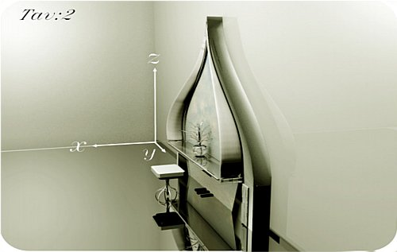

Learning City Point
STATUS: ✵ INACTIVE - last update (31/08/16)
Proposta di ideazione progettuale per il restauro, il recupero e destinazione ad uso culturale e apprendimento musicale della "casetta del tè"
Proponente:
- BergamoHub e-Learning Specialist- ꗝFabrizio Terzi
- Allestimento "Il Portale" Peeragogy on Music .pdf
- Iniziativa "Comune di Bergamo" “Beni Comuni” e “Volontariato Civico #2016
- Sei il benvenuto se desideri contribuire anche tu!
Abstract:
« ...Ci sono cose per cui vale la pena impegnarsi, tutti quanti, grandi e piccoli. Una di queste cose è la propria città, amandola e inventandola ogni giorno. La città siamo noi, i nostri desideri e la nostra visione del futuro. Tecnologia, natura, accoglienza, sapere, sostenibilità, turismo e tradizione. In una parola: personalità e a Bergamo di certo non mancano ».
La finalità del progetto "Il Portale" o "Learning City Point" è di re-immaginare lo spazio pubblico cittadino e offrire un punto d'accesso e condivisione d' informazioni on-line e accesso alla rete per i tutti i cittadini, studiosi e volontari. Il completamento dell'opera nel parco e la sua gestione come "Learning point" è destinato ad essere esplicitamente di carattere inter-trans-disciplinare e culturale, espressione di una visione della città condivisa e attenta a identificare e descrivere i processi di co-generazione. L'intento è quello di fornire uno spazio di condivisione,un punto di riferimento cittadino, per ricercatori e chiunque sia attivo alla vita cittadina. Gli articoli saranno firmati dai partecipanti provenienti da diversi paesi, con particolare attenzione nel dare voce a coloro che indagano settori di ricerca applicata e sperimentazione educativa in ambienti "Open Education".
Contesto:
Parco comunale "Caprotti" Via Tasso Bergamo (Bg) "La casetta del tè"
Coordinate geografiche: 45°41'55.5"N 9°40'24.0"E
Visualizza mappa ingrandita
Al momento la casetta è adibita a sede provvisoria del custode. Si evidenziano gravi danni strutturali alle decorazioni interne e della facciata esterna. Tuttavia, è possibile ammirarne il fascino e la sua originalità nel suggestivo e ben curato contesto naturale.
Data di creazione e avanzamento progettuale:
- Bergamo 08-12-2015
Value proposition:
Si chiamano rispettivamente “Beni Comuni” e “Volontariato Civico”: sono i due progetti e regolamenti distinti che la Giunta del Comune di Bergamo ha proposto e approvato per disciplinare i rapporti tra Amministrazione e cittadini/associazioni per quel che riguarda il tema della cittadinanza attiva. La cura di luoghi pubblici (parchi, edifici pubblici, ecc.), le piccole manutenzioni (sistemare una panchina, una porta, un'aiuola, tinteggiare la recinzione di una scuola, ecc.), l'apertura di spazi altrimenti chiusi (sale di lettura in orari serali, aree dismesse, parchi pubblici, ecc.) alcune attività lavorative in forma digitale (archiviazione di dati, realizzazione di applicativi, ecc.) sono solo alcuni dei comportamenti alla base dei due “patti con i cittadini” che il Comune di Bergamo ha messo nero su bianco con i documenti che andranno in Consiglio Comunale nelle prossime settimane.
- OER (Open Educational Resource):
- Open Source:
L'installazione è innanzitutto un luogo di apprendimento e di partecipazione attiva pubblico destinato all'espressione creativa delle comunità locali. La possibilità di condivisione "peer to peer" facilita e implementa lo scambio di contenuti, nuove informazioni, feedback ed analisi attraverso la rete raffinandone al tempo stesso la loro qualità.
--☀ MIT Design and Development of Educational Technology This project-based course explores educational technologies and the theories underlying their development through interviews with experts in the field.
IPFS Project.Il nuovo protocollo di trasmissione "InterPlanetary File System (IPFS)" consente la creazione di applicazioni dedicate all'installazione ed è un sistema completamente distribuito. Ha lo scopo di rendere il web più veloce, più sicuro e più aperto. IPFS è un progetto open source sviluppato da molti team e collaboratori di comunità "open".
- Open-source hardware (OSH):
|  |  |
Obiettivi:
Il co-design è un approccio collaborativo alla progettazione e riqualificazione di spazi che servono e nutrono l'essere creativo nelle sue varie situazioni di interazione. Il metodo combina l'intelligenza creativa e analitica stimolato l'apprendimento e l'approccio creativo con il supporto di un team multi-disciplinare. Questo metodo si ispira alla "progettazione centrata" che mette le persone al centro del processo.
- Restauro bene comune
- Concessione degli spazi
- La creazione di un network di "Learning City Point"s" e espazi pubblici di collaborazione, apprendimento e innovazione locale.
Modello e obiettivi Educativi:
Il modello ornamentale presentato è dedicato alla tradizione musicale e artistica alla città di Bergamo. Grazie alla combinazione delle nuove tecnologie dedicate all'apprendimento e divulgazioni di contenuti didattici all'introduzione e perfezionamento pianistico. Creatività e Peeragogia applicata come mezzo espressivo, ma soprattutto didattica e tanta voglia di condividere i propri progressi e apprendere assieme.
Obbiettivi di sostenibilità economica:
OER (Open Educational Resource):
Educational Design
Fabrizio final project @ "Design and Development of Educational Technology" #MOOC #MIT #11132x
Fasi del progetto:
☀ Engaging:
Engaging per creare un primo gruppo di lavoro.
ᴥ Co-Creating:
Per inspirare supportare un team dedicato, funzionale e ben organizzato.
₪ Designing:
Al fine di apprendere in modo creativo lo sviluppo dell'istallazione e completare ogni capitolo di spesa e reports in modo completo e trasparente.
↝ Scaling:
Per aumentarne in modo costante l'impatto sociale e l'utilità didattica e creativa nella città.
✿ Resourcing:
Per raccogliere le risorse necessarie al fine di sostenere economicamente ogni fase di "ideazione e sviluppo del progetto".
Restauro:
Indagine conoscitiva
- R-1- Valutazione intervento
- R-2- Feedback e discussione pubblica
- R-3- Raccolta preventivi
- R-4- Bando d'appalto
- R-5- Inizio e fine lavori
- R-2- Feedback e discussione finale
- Investimento per la creazione di un team progettuale multidisciplinare
- "Fase di progettazione"
- "Fase di "Ideazione
- "Fase di "Analisi dei risultati"
- "Fase di "Open Feedback"
- M-1 Social Action Process
- Giacomo Angeloni (PD) Assessore all'innovazione Comune di Bergamo. (Nessun feedback)
- Marcello Zenoni (M5S) Portavoce consigliere. (Interessato alla realizzazione)
- FabLab Bergamo (Nessun feedback)
Progettazione:
Allestimento:
Apertura:
Da definire.
Milestones raggiunti:
Milestones da raggiungere:
Risorse necessarie:
Pianificazione economica:
Program Management:
Gestione e proposta sociale:
A tutela del patrimonio pubblico e alla gestione in loco dell'istallazione e manutenzione degli spazi adiacenti in collaborazione con il custode del parco. Nel rispetto delle norme dal consiglio comunale emanate, l'accesso al "Learning Point" potrebbe essere regolato dall'affitto orario o donazione libera, il cui intero utile sia destinato al reinserimento sociale ed economico di una persona bisognosa che assuma il ruolo di "Custode della casetta" per un periodo di durata concordata.